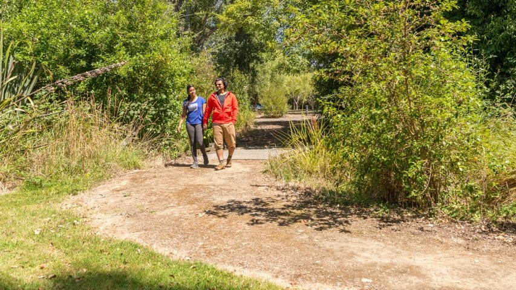
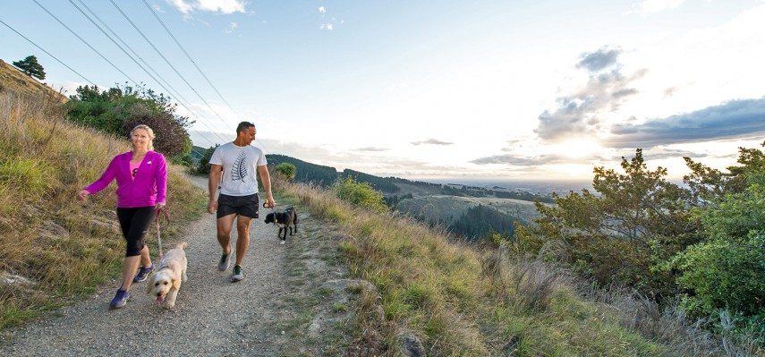
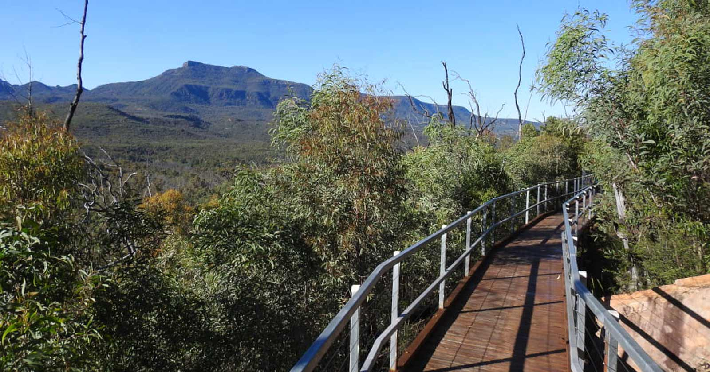

Visitors to Fiordland have a wide range of attractions to choose from, including all of the following activities:

Walking Tracks
Fiordland National Park has a world wide reputation for its walking tracks which are amongst the best in the world, and some of the finest scenery Fiordland has to offer can be seen from the following tracks.
Milford Track
One of New Zealand's most popular walks, the 53.5km Milford Track was once described as the finest walk in the world.

Routeburn Track
The Routeburn track traverses 33km of Mount Aspiring and Fiordland National Parks and extends between the head of Lake Wakatipu and the Milford road.

Kepler Track
A 60 kilometer circular track travelling through spectacular scenery in Fiordland National Park